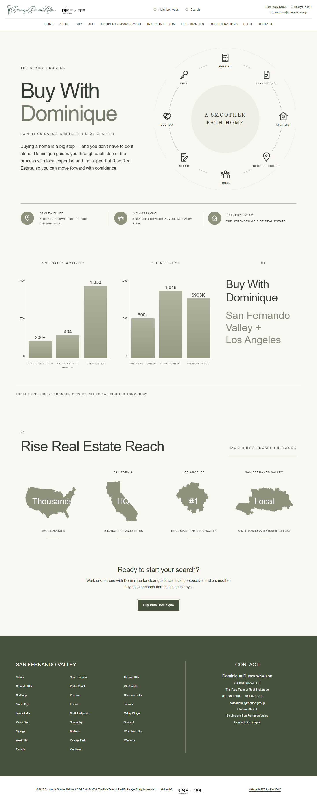
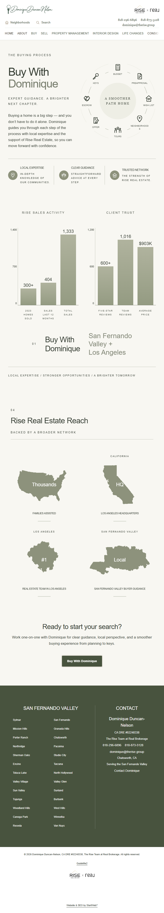
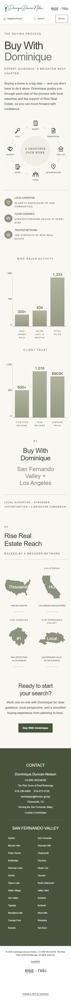
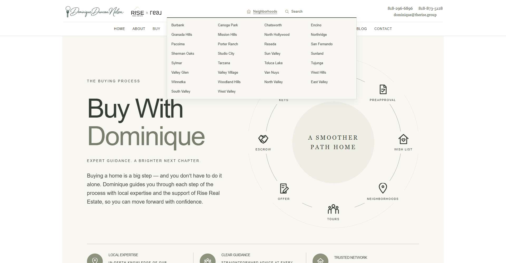
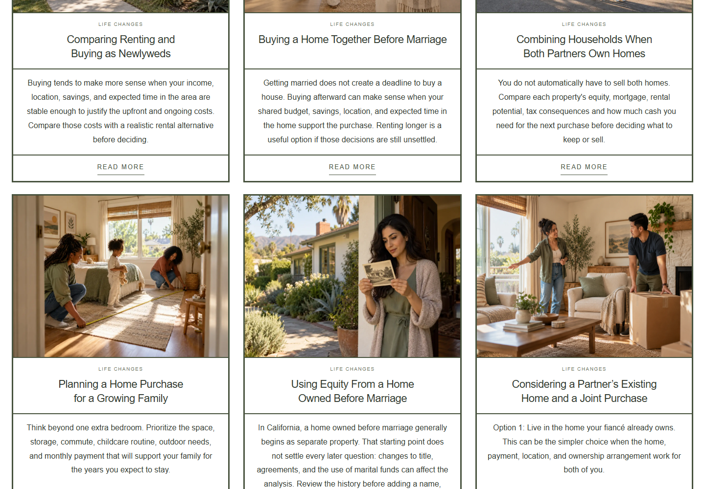
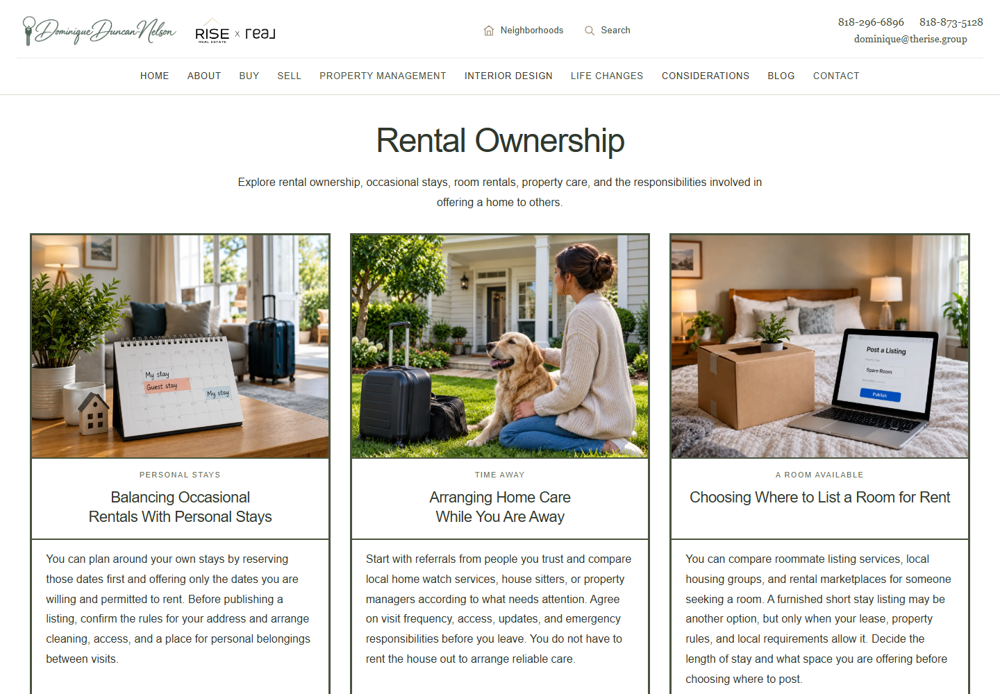
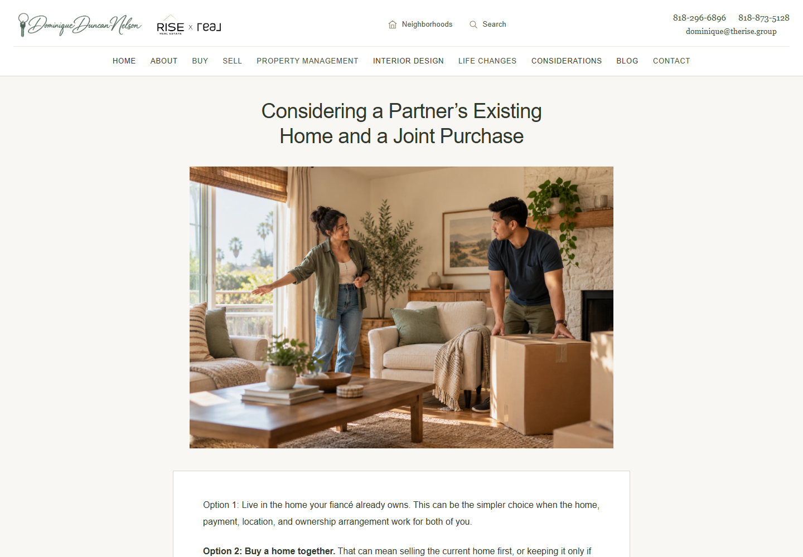
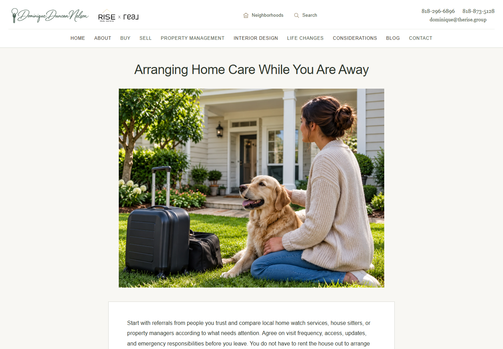

Open the rebuilt Buy With Dominique page. Implemented locally; not committed, pushed or published.
The three flattened desktop graphics and mobile graphic versions were replaced with live HTML text, CSS charts, and inline vector diagrams/maps. Existing chart values, section text, sage/ivory composition and consultation destination are retained. Map outlines are derived from the existing approved artwork; all map labels and process labels are live page text. No additional photographs were generated.
All 352 live HTML pages were audited: 529 unique referenced media assets, including five video sources. Chrome successfully decoded all 524 image assets, with zero failures. The 159 reachable stylesheets reference 17 additional CSS image files; all are valid. Twelve empty image files were restored: eleven exact originals from local Git history and one original portfolio JPEG from the URL identified by the project photo inventory. Both named article photos now display in their category cards and full articles.
Neighborhoods is centered beneath its trigger at large desktop widths (1200px and upward), with viewport-edge bounds. At tablet and phone widths it retains the usable bounded panel. Tested Buy layouts at 320, 390, 768, 1024, 1440 and 1920 CSS px using Chrome viewport/touch emulation; checked no horizontal overflow, eight live process steps, two live charts, and no JavaScript errors. No physical-device testing was performed.
Changed: buy-a-home.html, new assets/buy-with-dominique.css, assets/navigation-v22.js, twelve restored image files, and local audit artifacts. Existing Buy metadata, header, footer and scripts outside the main content are unchanged apart from the new stylesheet link. The original approved raster compositions remain in assets as source references.
Exact restored-image provenance ? Site-wide image references audit ? Chrome decode results ? CSS image audit ? Responsive layout verification







